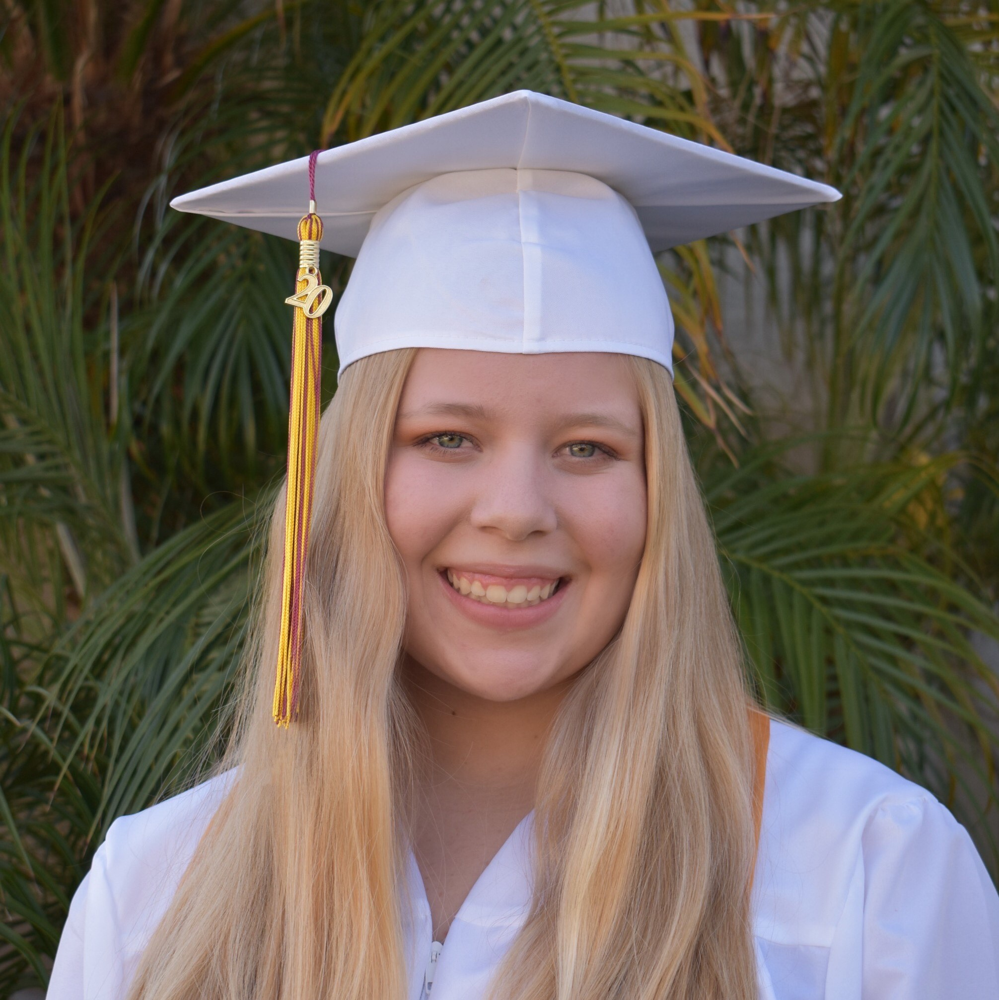
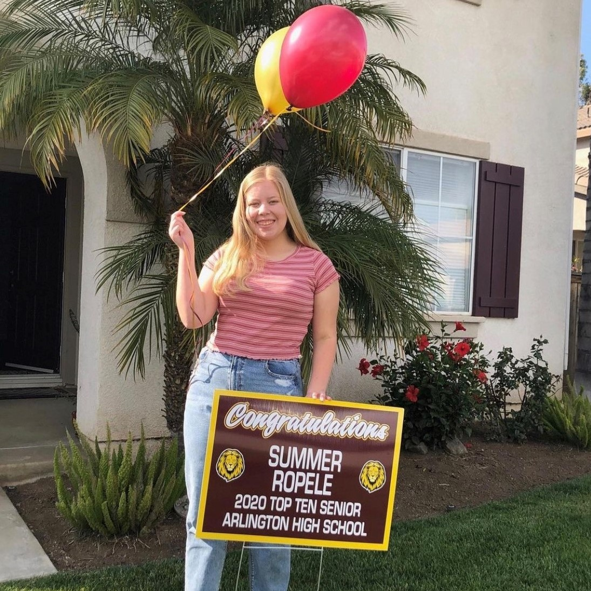
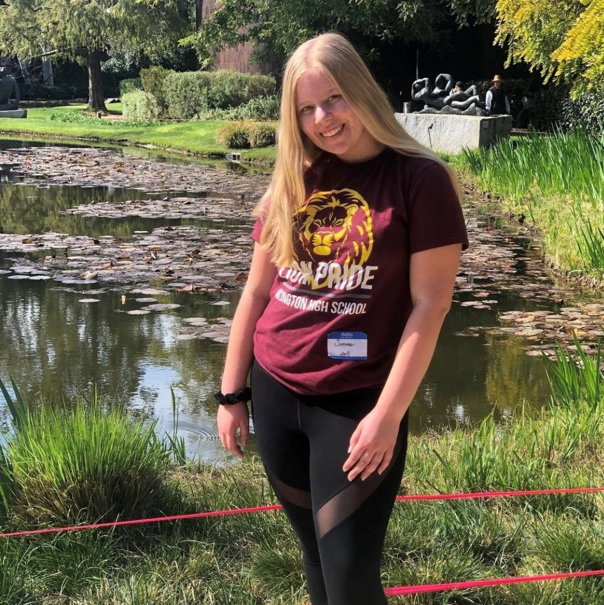
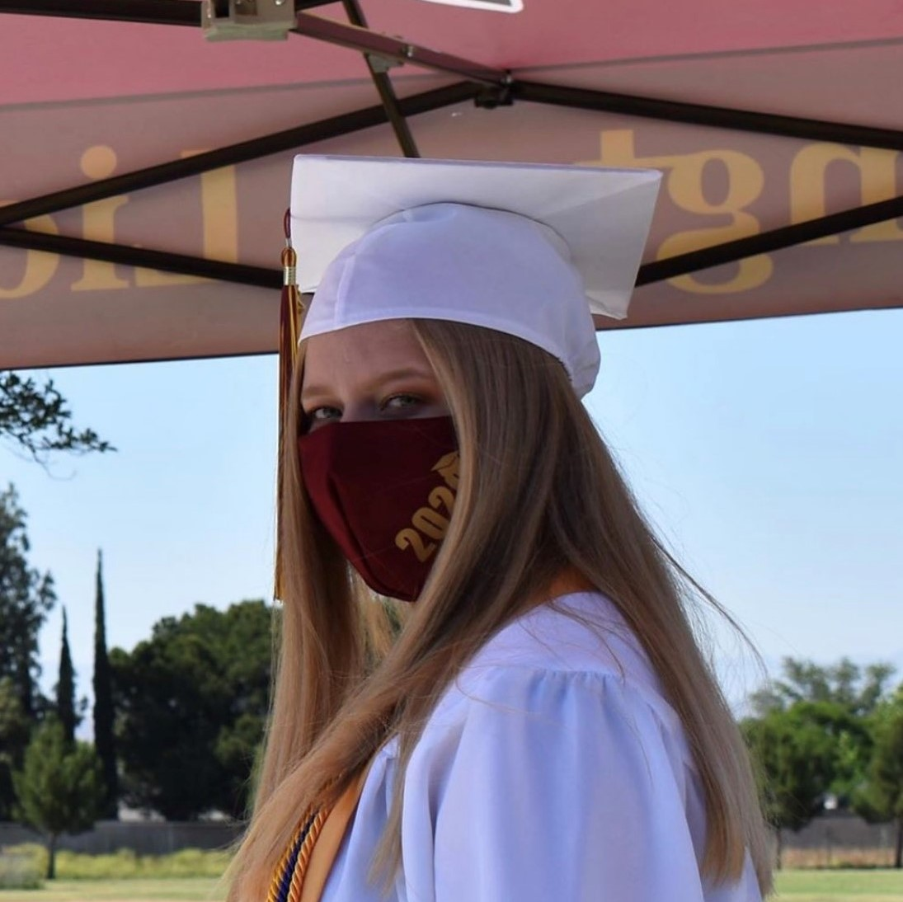
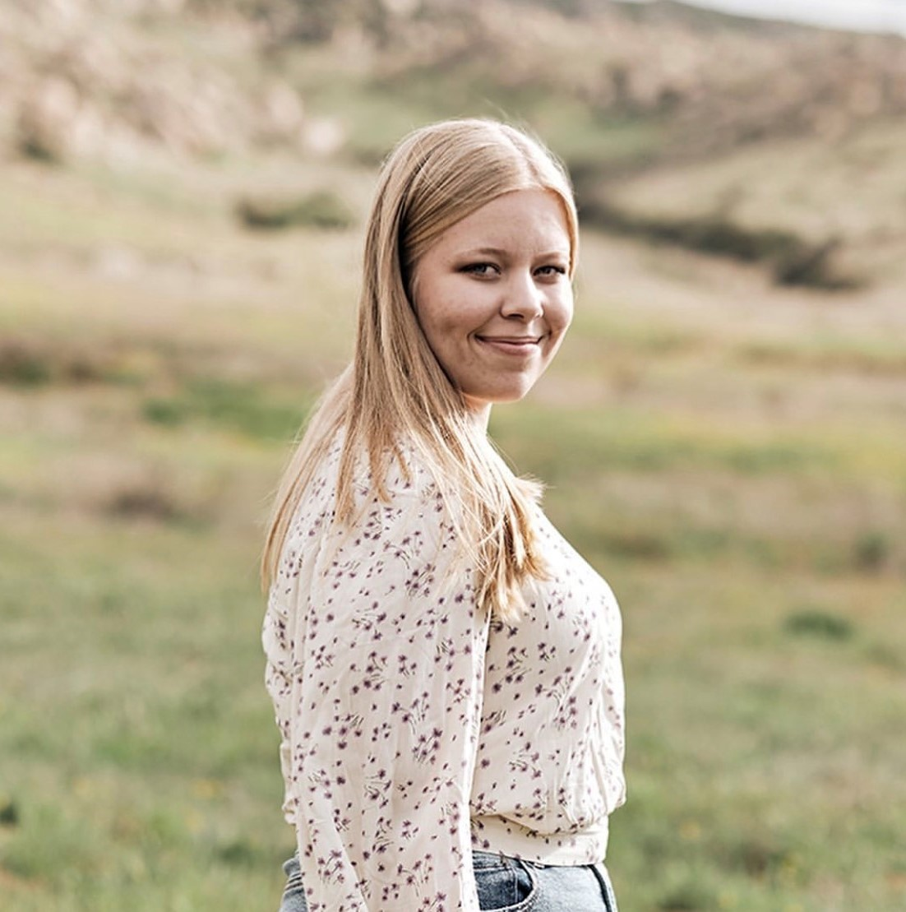
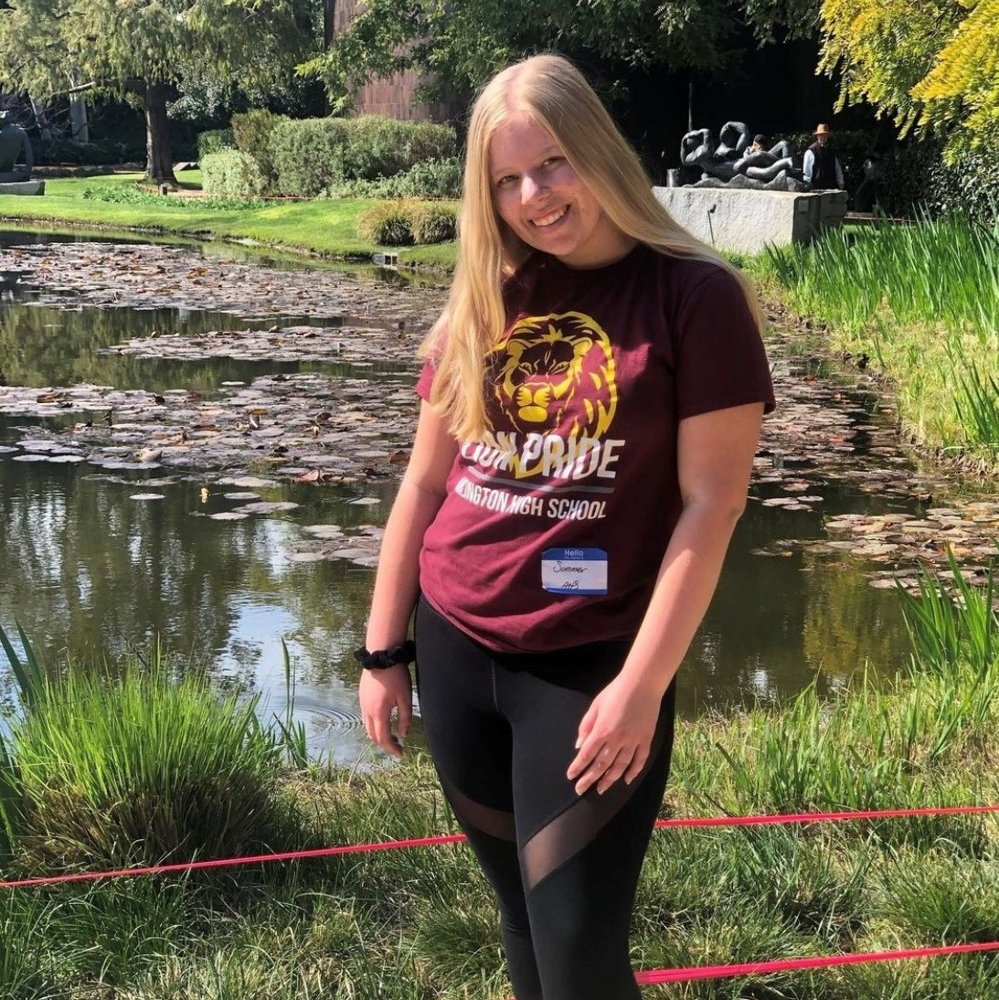
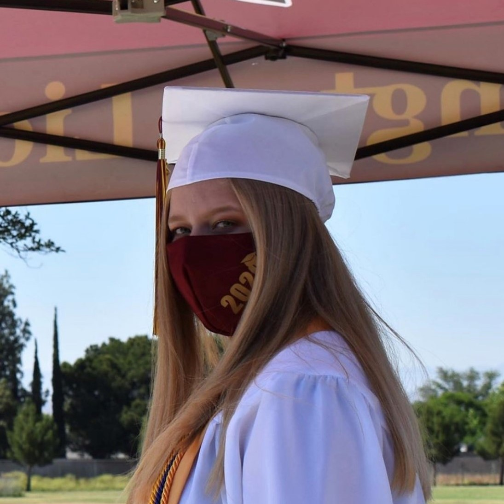
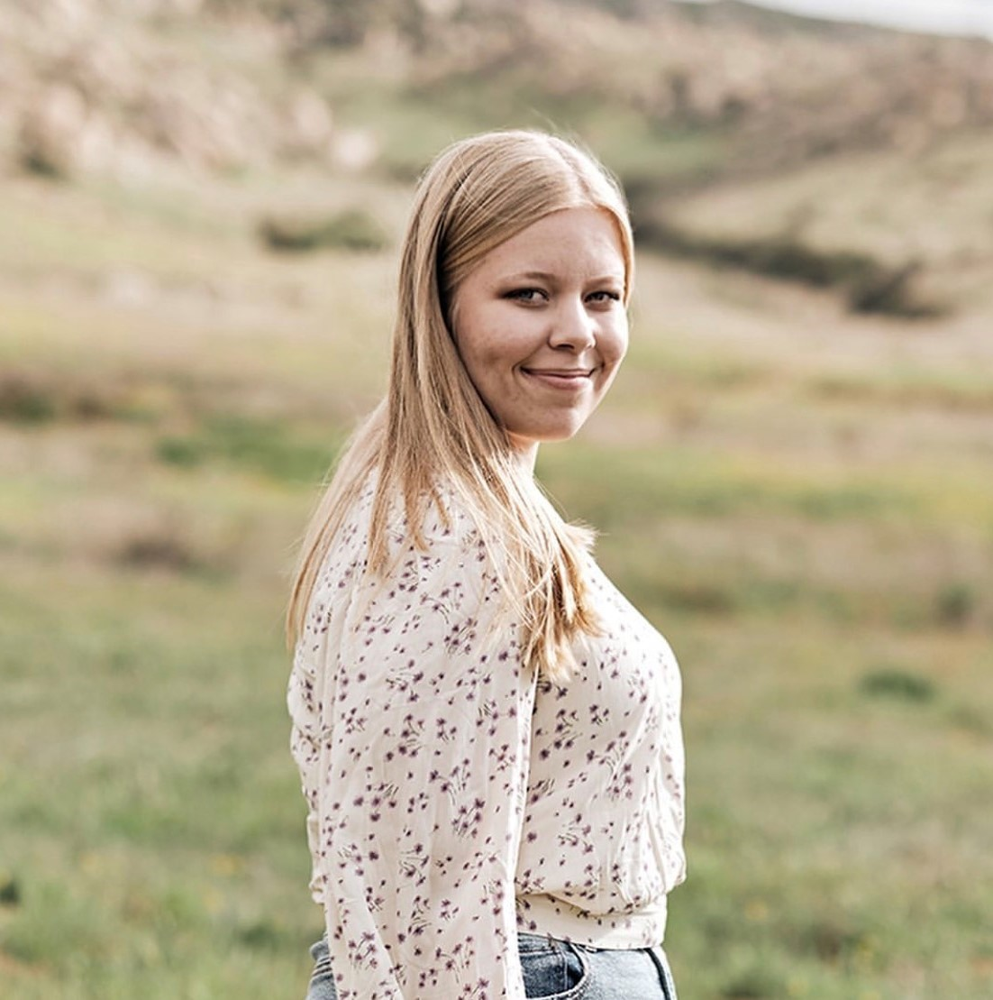

Summer Ropele
I am currently a first year at the University of California, Riverside studying Pre-Business. I plan to eventually receive a concentration in marketing with specific focus on digital marketing. I have made the Dean's Honors List during my first quarter in university, receiving a 4.0 GPA.
While in high school, I was in the top 10 of my class during all four years of my time at Arlington High School. I also received a scholar award in 2018 for outstanding academics along with student of the month awards all four years also.
I was an active participant in many clubs and organizations during my time in high school. I was a member of National Honor Society from October 2019 through May 2020. We worked as a club to help others; we set up donation boxes around the school for other students to drop off supplies for homeless shelters; we also held a tutoring service where members of the club would volunteer before or after school to help other student with topics they struggled with; the club also held many canned food drives and toy drives for those in need. I was also a member of the California Scholarship Federation from January 2017 through May 2020, graduating as a California Sscholarship Federation sealbearer. I was also a board member of the S.T.E.M club from September 2019 to May 2020, organizing and recording many projects, such as learning to solder, and planned many events, like trips to observatories or looking at planets through telescopes. I was also an active member of the Chemistry club, Community Service club, and Art club.
While being involved in many extracurriculars on campus, I was also volunteering off of campus. I volunteered with the Gold Rush Cure Foundation during their annual banquet to raise money for children with childhood cancer. It was also regular for me to participate in park clean-ups on my free time; I took part in the Keep Riverside Clean and Beautiful event, which involved keeping the areas near the Santa Ana river in Riverside clean.
Experience
STEM Club
• updated social media accounts
• organized projects for the club to work on during meetings
• planned trips or events to participate in
National Honor Society
• tutored other students on campus
• planned toy drives and food drives
• organized donation drop-off locations for homless shelter donations
Community Service
• set-up banquet location before guests arrived
• helped sell raffel tickets for prizes to help children with cancer
• ran auction bids to the person recording the bid amounts
• assisted in giving the auction winners their rewards
Education
University of California Riverside
Portfolio





.jpg)
 
